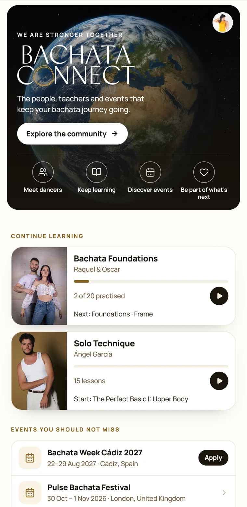

01Founder and design engineer
Bachata Connect
Built a bespoke NFC check-in experience from scratch for the festival I run, where 400 dancers from 45+ countries arrive in Cádiz every year
The app I built for my international bachata dance event. 400 dancers from 45+ countries get a premium learning experience. It is now an online classes platform, where the design system lets me personalise the experience for each artist with little effort.
Read the case study →